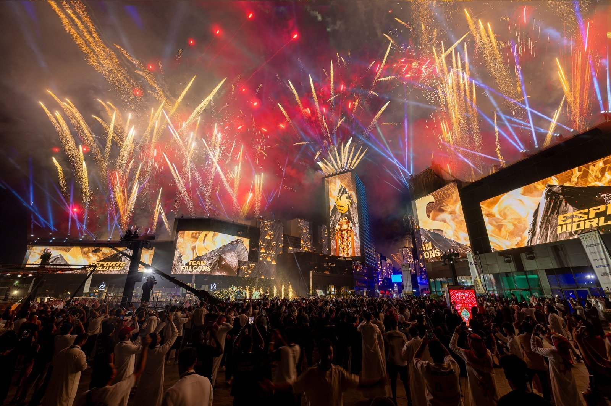
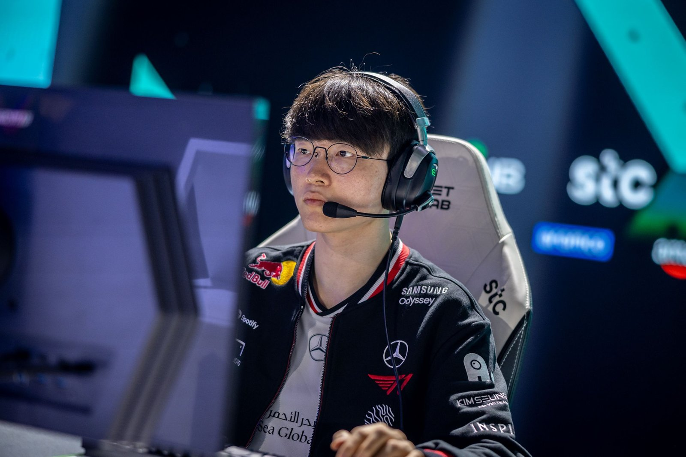
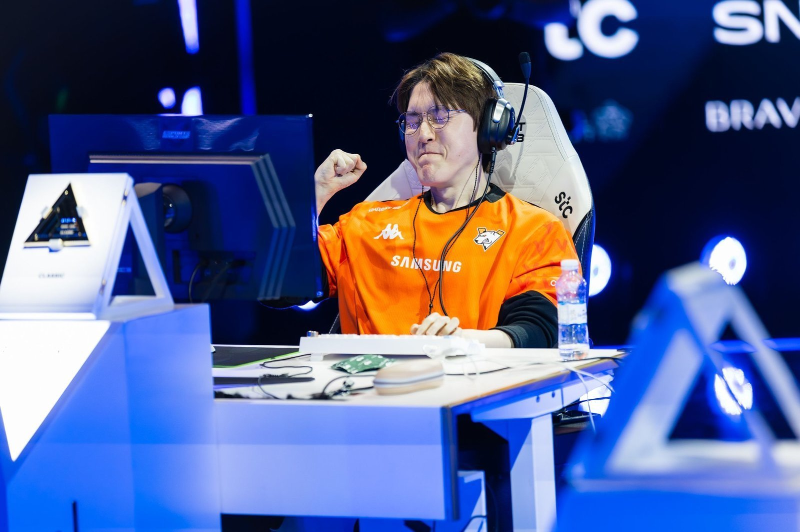
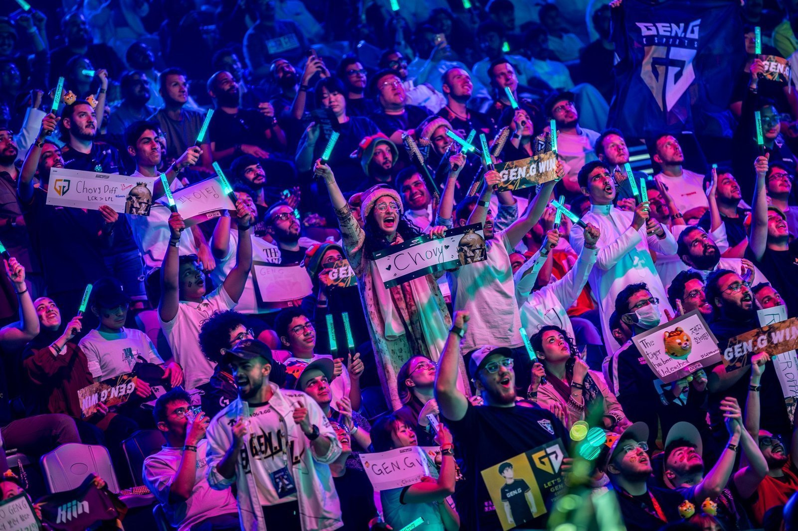
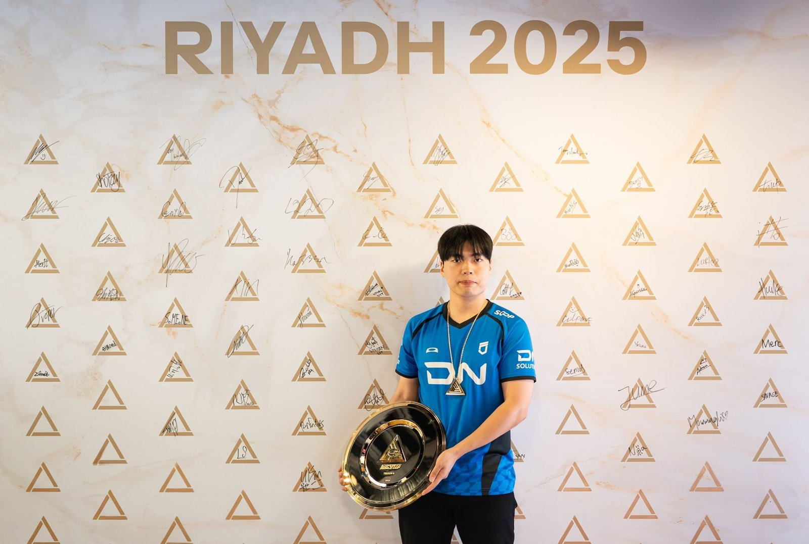
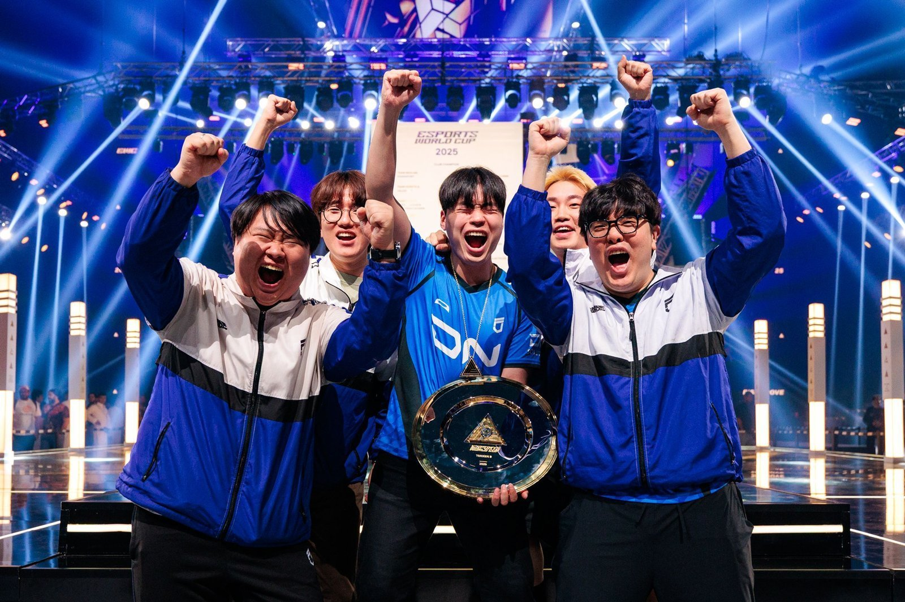
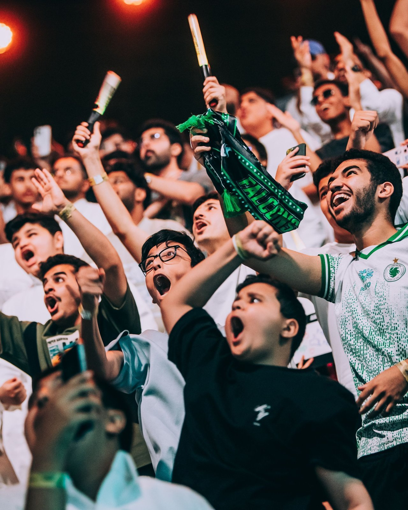
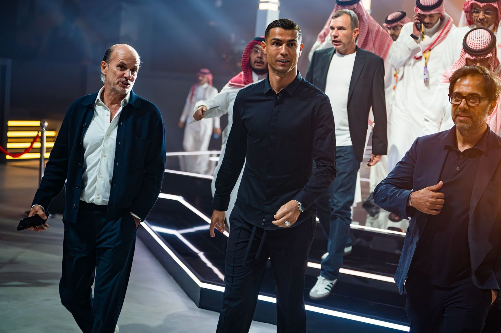
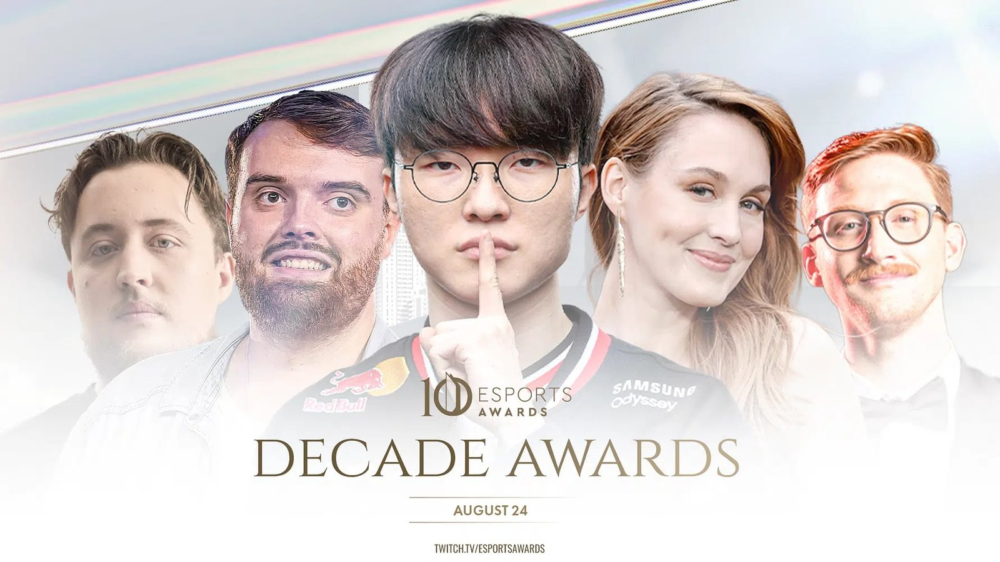

2025년 7월 8일부터 8월 24일까지 7주간 사우디아라비아 수도 리야드에서 세계 최대 규모의 e스포츠 월드컵(Esports World Cup; EWC 2025)이 열렸다. 89개국에서 모인 2,500명 이상의 선수 및 클럽 스태프가 참가한 이번 행사에서는 25개 토너먼트, 총 871번의 경기가 치러졌다. 218개 클럽이 대회에 출전했고 그중 103개 클럽이 포인트를 획득, 상위 24개 클럽은 최소 15만 달러의 상금을 확보했다. 대회 전체 상금은 7천만 달러 이상에 달했다. 리야드 볼리바드 시티(Boulevard City)에 300만 명 이상의 관람객이 방문하면서 도시 전체가 게임과 축제의 공간이 됐다. 이는 사우디가 '비전 2030(Vision 2030)'을 통해 글로벌 e스포츠 허브로 도약하려는 전략임을 상징적으로 보여준다.

▲ 리야드 볼리바드 시티에서 열린 2025년 e스포츠 월드컵 현장 — 출처: EWC 2025
한국, 종합 2위 성과
국제 e스포츠 전문 매체 집계에 따르면 한국은 금메달 12개, 은메달 9개, 동메달 18개로 총 39개의 메달을 획득해 중국(43개)에 이어 종합 2위를 차지했다. 종목별 주요 성과는 다음과 같다.
- 리그 오브 레전드(League of Legends): 젠지(Gen.G)가 우승, 티원(T1)이 3위
- 오버워치 2(Overwatch 2): 전원 한국인 선수로 구성된 사우디 소속 팀 팔콘스(Team Falcons)가 우승
- 철권 8(TEKKEN 8): 임수훈(Ulsan), 윤선웅(LowHigh), 김재현(CBM)이 1, 2, 3위를 석권
- 스타크래프트 II(StarCraft II): 핀란드의 요나 소탈라(Serral)가 우승. 한국 선수 김도우(Classic)가 2위, 김도욱(Cure)이 3위, 강민수(Solar)가 4위로 연이어 입상
- 배틀그라운드(PUBG: BATTLEGROUNDS): 젠지가 2위 기록
한국은 전통 강세 종목과 신흥 종목 모두에서 두각을 드러내며 K-게이머의 경쟁력을 세계 무대에 각인시켰다.


▲ (좌) 리그 오브 레전드 — 페이커(T1) 경기 현장, (우) 스타크래프트 II — 김도우(Classic) 경기 현장 — 출처: EWC 2025

▲ 젠지를 응원하는 리야드 팬들의 응원 현장 — 출처: EWC 2025


▲ 철권 8 1위 임수훈(Ulsan), 시상식 세리머니 — 출처: EWC 2025
e스포츠 종주국에서 중동 무대로
e스포츠는 1999년 한국에서 시작된 스타크래프트 프로 리그(온게임넷 스타리그; OSL)를 계기로 세계 최초의 정규 리그가 출범하며 본격적으로 산업화됐다. 2000년에는 한국e스포츠협회(KeSPA)가 공식적으로 출범해 선수 등록, 리그 운영, 중계권 관리까지 제도적으로 뒷받침하면서 한국은 세계에서 처음으로 국가 차원의 e스포츠 시스템을 갖춘 나라가 됐다. 2000년대 초반 스타크래프트 경기는 케이블 TV를 통해 전국에 생중계됐고, 프로게이머는 대중적 스타가 됐다. 이후 리그 오브 레전드, 오버워치, 배틀그라운드, 철권 등 종목이 확대되며 전 세계로 확산됐고, 오늘날 e스포츠는 수억 명의 팬을 거느린 거대 산업으로 성장했다. 이번 리야드 월드컵은 이러한 e스포츠 역사가 중동으로 확장되는 중요한 분기점이 됐다.
특히 주목할 점은 사우디 소속팀 팔콘스가 이번 월드컵에서 클럽 챔피언십 종합 우승을 차지했다는 것이다. 이 팀은 전원 한국인 선수로 구성돼 있으며 사우디 자본과 한국 선수들의 기량이 결합돼 성과를 거둔 대표적 사례다. 이번 오버워치 2 우승과 클럽 종합 우승은 사우디의 전략적 투자와 한국 선수들의 국제 경쟁력을 동시에 보여주는 장면으로 평가된다.

▲ 팔콘스를 응원하는 사우디 팬들 — 출처: EWC 2025
'비전 2030'과 문화 전략
사우디는 이번 월드컵을 통해 '비전 2030'이 지향하는 문화·엔터테인먼트 허브 전략을 구체적으로 드러냈다. 사우디 관광청은 해외 팬을 위해 EWC 2025 관광 패키지를 선보여 경기 관람과 함께 리야드의 명소와 문화를 체험할 수 있도록 했다.
또한 폐막식 무대에는 슈퍼스타 축구선수 크리스티아누 호날두(Cristiano Ronaldo), 제라르드 피케(Gerard Piqué)와 카카(Kaka) 등을 비롯해 체스 챔피언 망누스 칼센(Magnus Carlsen), 스케이트보드 레전드 토니 호크(Tony Hawk), 가수 포스트 말론(Post Malone), 세계적 인플루언서와 아티스트가 총출동해 대회의 위상을 보여주었다. 이는 e스포츠가 단순한 게임 경기를 넘어 글로벌 스포츠와 대중문화가 교차하는 새로운 엔터테인먼트 플랫폼으로 자리 잡았음을 보여주는 장면이었다.

▲ 폐막식에 참여한 크리스티아누 호날두(현 알나스르 소속) — 출처: EWC 2025
e스포츠 어워드, 한국 3관왕 달성
2025년 e스포츠 월드컵 폐막식과 같은 날 리야드에서 열린 e스포츠 어워드(Esports Awards 2025; Decade Awards)는 지난 10년간 e스포츠를 대표한 선수, 팀, 게임, 기업을 기리는 무대였다. 한국 선수 페이커(이상혁)는 '피씨 플레이어 오브 더 디케이드(PC Player of the Decade)'를 수상하며 세계 최고의 리그 오브 레전드 선수로서 입지를 다시 확인했다. 그의 수상 소식은 해외 주요 외신도 비중 있게 다루면서 글로벌 차원에서 업적을 인정받았다. 이어 티원이 '팀 오브 디케이드(Team of the Decade)', 김정균 감독(KKoma)이 '코치 오브 더 디케이드(Coach of the Decade)'에 선정되며 한국 e스포츠의 위상은 국제 무대에서 다시 한번 각인됐다.

▲ 2025년 e스포츠 어워드 메인 포스터 — 출처: Esports Awards 2025
글로벌 시청 지표와 의의
이번 대회는 온라인으로도 기록적인 성과를 냈다. 전 세계 누적 시청 시간은 3억 4,000만 시간에 달했으며 리그 오브 레전드 결승전은 동시 접속자 수 750만 명을 돌파하며 e스포츠 역사상 손꼽히는 기록을 남겼다. 사우디는 이번 e스포츠 월드컵을 성황리에 개최하며 글로벌 e스포츠 허브로서의 가능성을 입증했다. 동시에 한국 선수들은 여러 종목에서 뚜렷한 성과를 거두며 세계적 경쟁력을 확인시켰다. 앞으로 사우디의 적극적인 투자와 한국의 경험이 만나 e스포츠를 매개로 한 양국 간 문화교류와 협력의 장이 더욱 넓어질 것으로 기대된다.
사진 출처 및 참고자료
E sports World Cup 2025 홈페이지, https://esportsworldcup.com
사우디 관광청 홈페이지, https://www.visitsaudi.com/en
한국e스포츠협회(KeSPA) 홈페이지, http://www.e-sports.or.kr
Esports Awards 2025 홈페이지, https://esportsawards.com/
리퀴피디아(Liquipedia), EWC 2025 Winners & Country Results
Esports ON SI (2025. 7. 21). Esports World Cup: All Winners, Placements and Prize Money
DOT ESPORTS (2025. 8. 25). Full list of Esports Awards 2025 winners in every category
ESPORTS INSIDER (2025. 8. 25). Faker, ZywOo, and xQc among Esports Awards of the Decade winners
Forbes (2025. 8. 25). Faker Crowned Best Esports Player Of The Last Decade